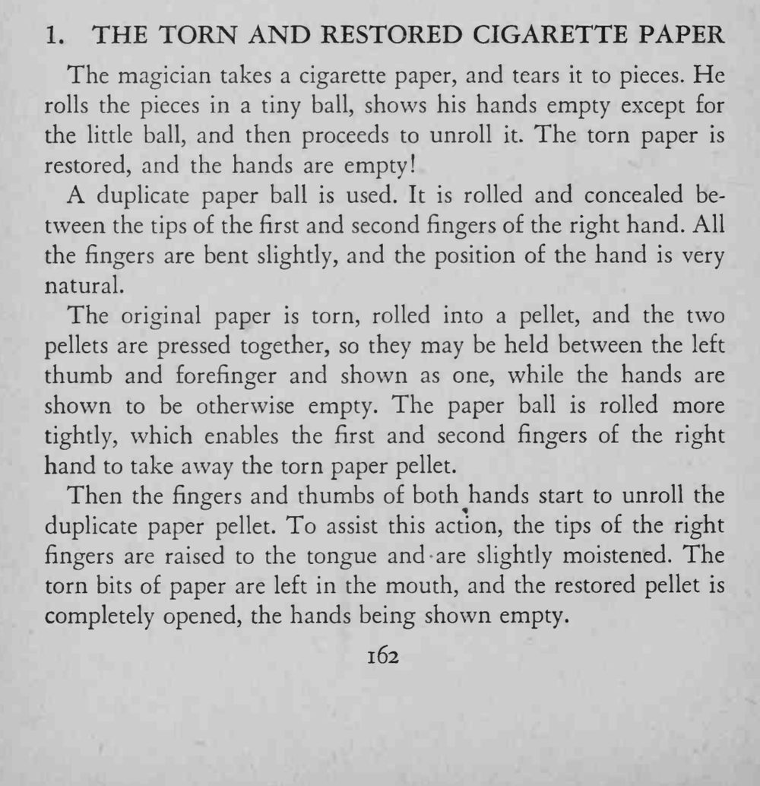

魔术师把一张卷烟纸撕碎揉成小球，再展开时纸已复原，两只手都是空的。
两个纸团大小要一致，交换时手不能停。

The magician takes a cigarette paper, and tears it to pieces. He rolls the pieces in a tiny ball, shows his hands empty except for the little ball, and then proceeds to unroll it. The torn paper is restored, and the hands are empty! A duplicate paper ball is used. It is rolled and concealed between the tips of the first and second fingers of the right hand. All the fingers are bent slightly, and the position of the hand is very natural. The original paper is torn, rolled into a pellet, and the two pellets are pressed together, so they may be held between the left thumb and forefinger and shown as one, while the hands are shown to be otherwise empty. The paper ball is rolled more tightly, which enables the first and second fingers of the right hand to take away the torn paper pellet. Then the fingers and thumbs of both hands start to unroll the duplicate paper pellet. To assist this action, the tips of the right fingers are raised to the tongue and are slightly moistened. The torn bits of paper are left in the mouth, and the restored pellet is completely opened, the hands being shown empty.